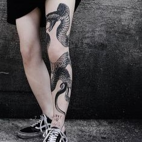
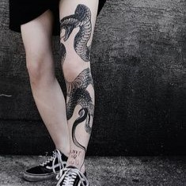

Vitória Daris Bender
22 ANOS. FORMADA PELA FACCAT EM 2021.
TRABALHA COMO TATUADORA HÁ 3 ANOS, INTERESSADA
NA ÁREA DESDE SEMPRE E INGRESSOU NO ESTUDIO DYNASTY
NO ANO DE 2021. VEM SE ESPECIALIZANDO NO ESTILO DE
BLACKWORK E RASTELADO DESDE O INÍCIO DA CARREIRA.

 
